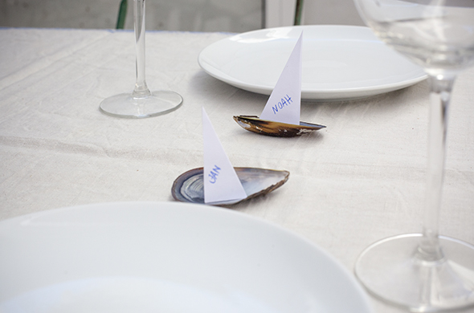
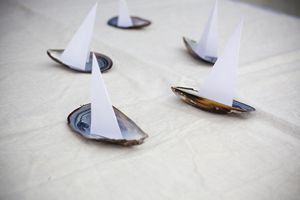
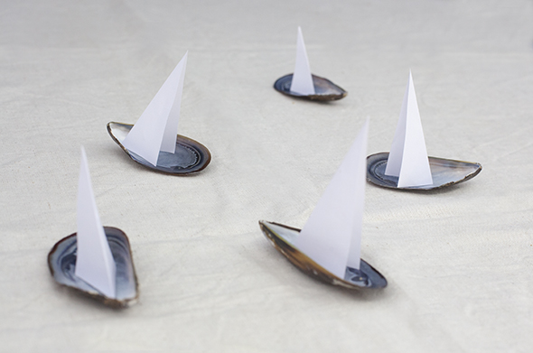

Otro día vimos esta decoración en la web y lo hemos hecho enseguida. Ademas se pueden usar como tarjetas de mesa. Me parece genial! Solo se dobla un papel para tener el doble triángulo de vela y se coloca encima de un mejillón. El mejillón se limpia fácil con jabón y agua caliente. La cena o comida de verano con decoración perfecta!